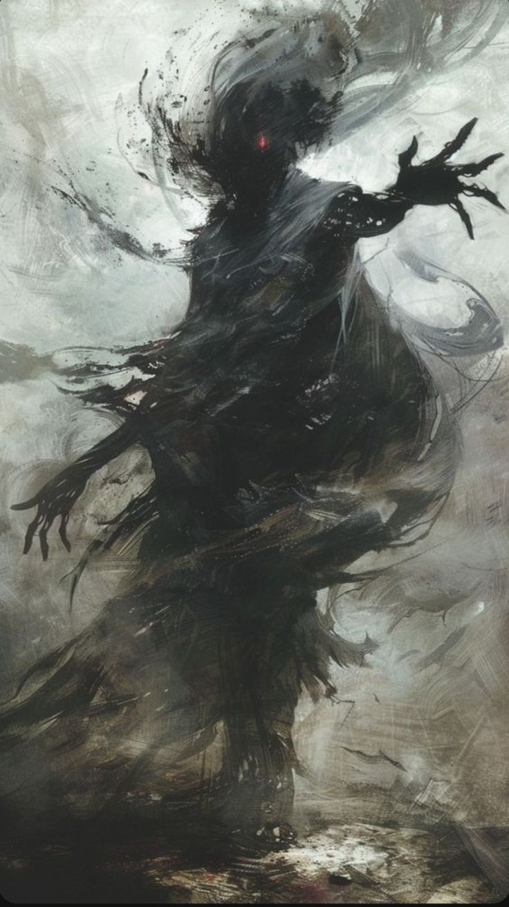

Shifters
Stats:
HP: 530
MP: 0
PHY STR: 5
PHY DEF: 5
MG STR: 5
MG DEF: 5
Alignement: Neutral

Shifters Racial Traits:
Shifter Skills:
- Metamorphosis (Support) (Level 0): The Shifter transforms into a random player within the same location as them, gaining access to that player's abilities and skills. The Shifter's original stats, passive skills, resistances, and vulnerabilities remain unchanged. This transformation can last for 5 of the user’s turns (Outside of battle) or until the Shifter uses another skill. (Can only be used once per battle while inside battle) (Can be used outside of battle).
- Adaptive Strikes (Support) (Level 15): The Shifter's next attack has a 25% chance to inflict a random status effect based on the enemy's race or class. Available effects include: Blind, Chilled, Cursed, Enraged, or Poisoned. (Can be used twice per battle)
- Metamorphic Leap (Support) (Level 30) The Shifter leaps to a targeted location, dealing 200 DMG to enemies in that area, and immediately engaging into combat with said enemies. They also gain a 20% boost to a random stat for 2 turns. (Can be used outside of battle)
- Chameleonic Camouflage (Support) (Level 65): The Shifter transforms into a race that blends in with their surroundings, becoming invisible in natural environments for 3 turns. While camouflaged, the Shifter gains a 30% damage reduction and a 15% boost to a random stat. Enemies attacking the Shifter during this time have a 20% chance to attack an empty space, wasting their turn. (Can be used once per battle)